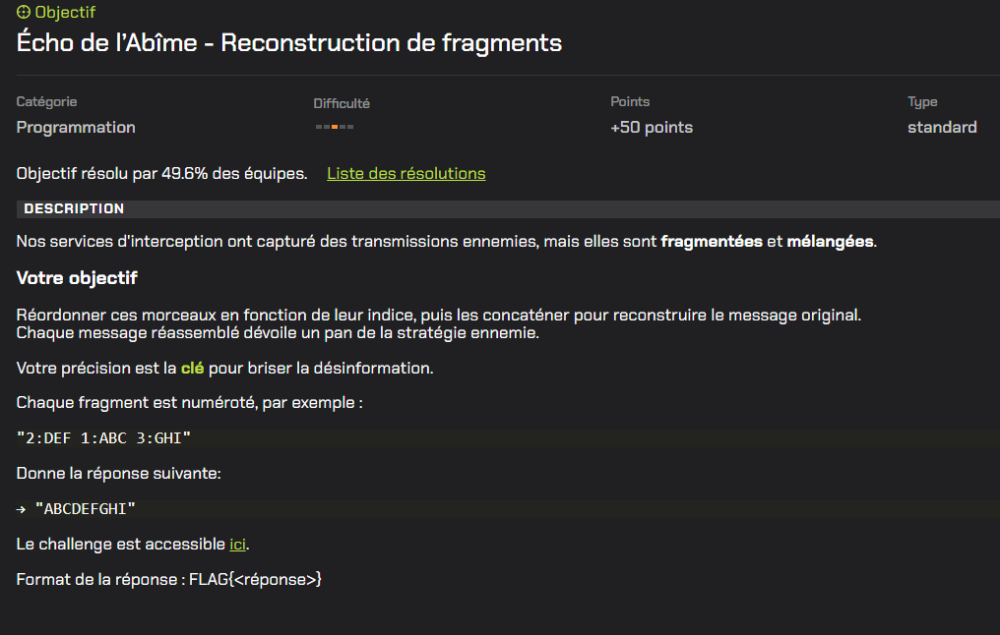
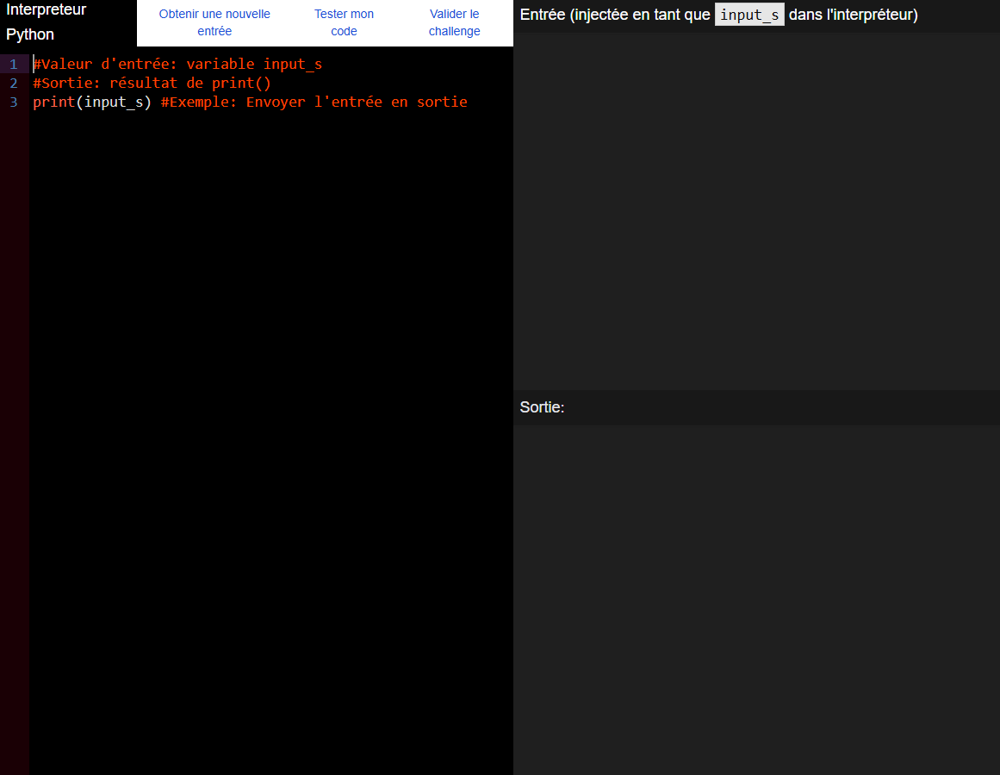
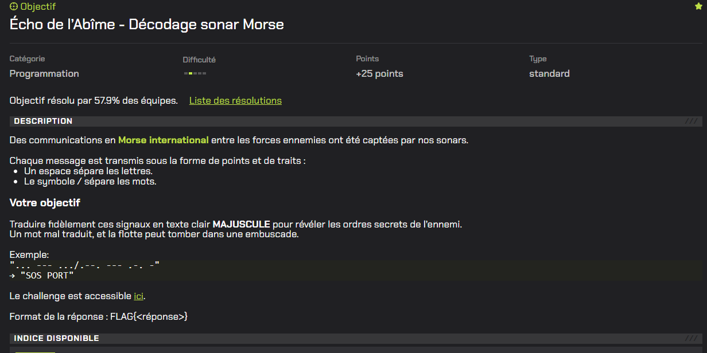
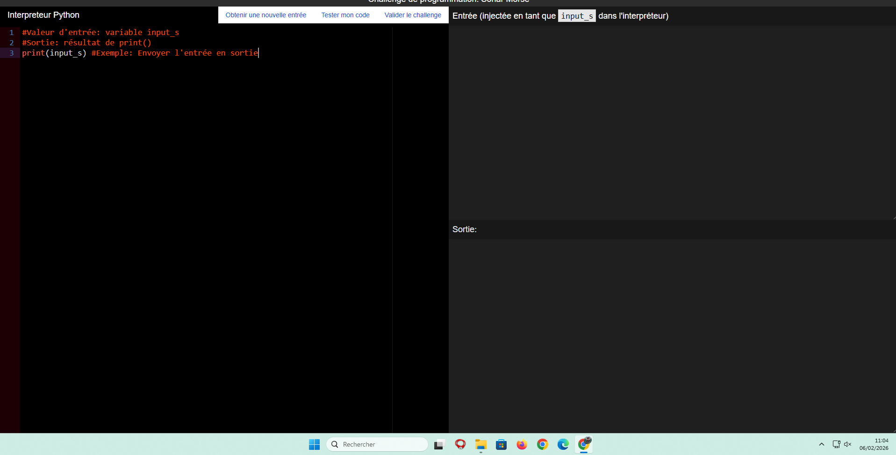
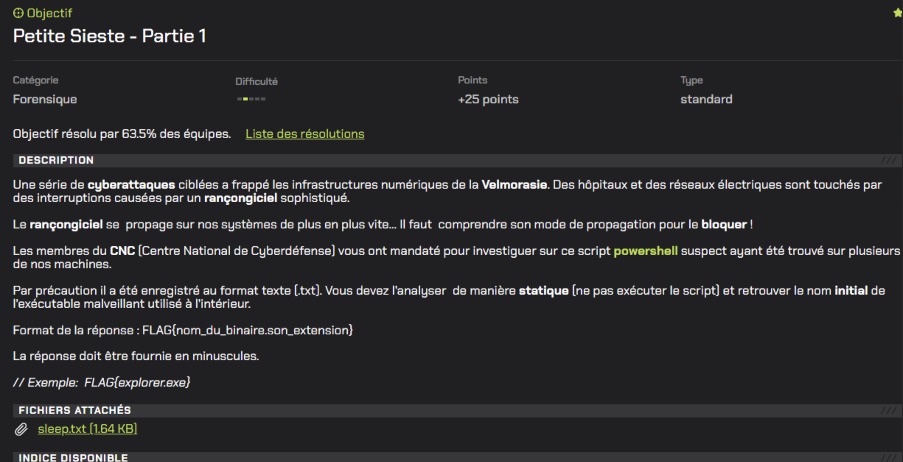
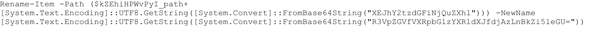
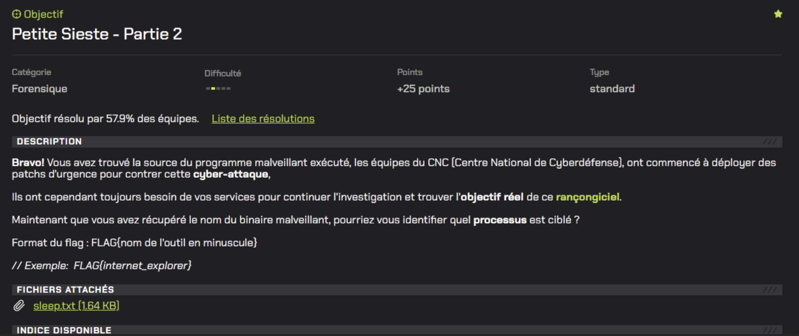
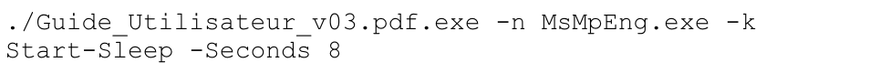

Problematique 1 - Challenge n20 (EVLang)
Enonce / Descriptif
Le defi EVLang consiste a analyser un langage de programmation special qui fonctionne dans une grille en deux dimensions. Le programme se deplace dans cette grille et utilise une pile et une memoire. L'objectif etait de comprendre son fonctionnement pour trouver le bon mot de passe a entrer afin d'atteindre le drapeau.
Resolution
- Lecture de la documentation EVLang pour comprendre les instructions (pile, memoire, operations, comparaison).
- Observation de la logique du programme : empilement de nombres, lecture des caracteres en memoire, calculs, puis comparaison.
- Identification de la condition cle : le resultat de comparaison doit etre egal a 0 pour continuer vers le drapeau.
- Transformation du probleme en calcul mathematique pour retrouver les bons caracteres.
- Conversion des valeurs trouvees en lettres via la table ASCII pour obtenir le mot de passe.
Captures d'ecran commentees


Problematique 2 - Challenge n15
Enonce / Descriptif
Reconstituer un message fragmente. Chaque fragment possede un numero. Il faut trier les fragments selon leur indice puis les concatener pour obtenir le message final.
Resolution
- Separer les fragments a partir de la chaine d'entree.
- Extraire l'indice et le texte de chaque fragment.
- Convertir l'indice en entier pour pouvoir trier correctement.
- Trier les indices dans l'ordre croissant.
- Concatener les fragments dans le bon ordre pour reconstruire le message.
Codes utilises
# Valeur d'entree : variable input_s
# Exemple: "2:DEF 1:ABC 3:GHI"
# Sortie attendue: "ABCDEFGHI"
parts = input_s.strip().split()
fragments = {}
for p in parts:
if ":" not in p:
continue
idx_str, frag = p.split(":", 1)
idx = int(idx_str)
fragments[idx] = frag
result = "".join(fragments[i] for i in sorted(fragments))
print(result)Captures d'ecran commentees


Problematique 3 - Challenge n7
Enonce / Descriptif
Traduire un message en Morse international. Un espace separe les lettres et un caractere "/" separe les mots. Le resultat attendu doit etre affiche en majuscules.
Resolution
- Creer un dictionnaire de correspondance Morse vers lettre.
- Separer les mots a l'aide du separateur "/".
- Separer les lettres Morse de chaque mot avec les espaces.
- Traduire chaque code Morse en caractere lisible.
- Recomposer la phrase finale dans le bon format.
Codes utilises
# Valeur d'entree : variable input_s
# Entree exemple: "... --- .../.--. --- .-. -"
# Sortie: "SOS PORT"
MORSE = {
".-": "A", "-...": "B", "-.-.": "C", "-..": "D", ".": "E",
"..-.": "F", "--.": "G", "....": "H", "..": "I", ".---": "J",
"-.-": "K", ".-..": "L", "--": "M", "-.": "N", "---": "O",
".--.": "P", "--.-": "Q", ".-.": "R", "...": "S", "-": "T",
"..-": "U", "...-": "V", ".--": "W", "-..-": "X","-.--": "Y",
"--..": "Z",
"-----": "0", ".----": "1", "..---": "2", "...--": "3", "....-": "4",
".....": "5", "-....": "6", "--...": "7", "---..": "8", "----.": "9",
}
s = input_s.strip()
# on split les mots par "/"
words = [w for w in s.split("/")]
decoded_words = []
for w in words:
letters = [x for x in w.strip().split() if x] # split par espaces
decoded = "".join(MORSE.get(code, "") for code in letters)
decoded_words.append(decoded)
print(" ".join(decoded_words).strip())Captures d'ecran commentees


Problematique 4 - Challenge n10
Enonce / Descriptif
Realiser une analyse statique d'un script PowerShell (`sleep.txt`) pour retrouver le nom initial de l'executable malveillant utilise par le rancongiciel.
Resolution
- Ouverture du fichier en lecture seule, sans execution.
- Recherche des lignes critiques, notamment celles liees au renommage de fichiers.
- Identification du changement de nom utilise pour dissimuler le programme.
- Recuperation du nom original avant modification.
Captures d'ecran commentees


Problematique 5 - Challenge n11
Enonce / Descriptif
Identifier le processus que le rancongiciel tente de desactiver a partir du script PowerShell analyse precedemment.
Resolution
- Relecture complete du script avec focus sur les parametres sensibles.
- Reperage du parametre qui cible un processus specifique.
- Identification du processus vise : `MsMpEng.exe`.
- Verification de son role : composant principal de Windows Defender.
Captures d'ecran commentees

